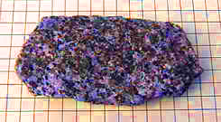
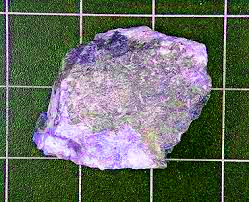
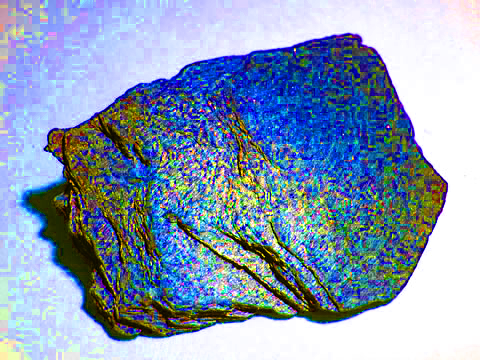
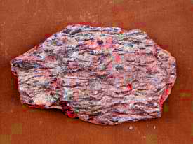
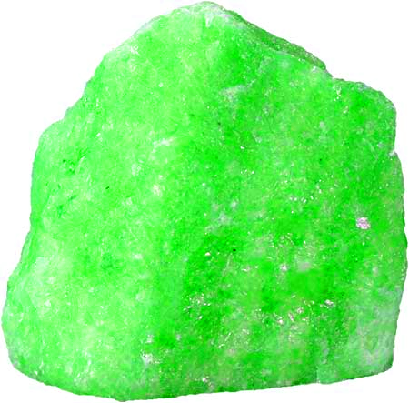
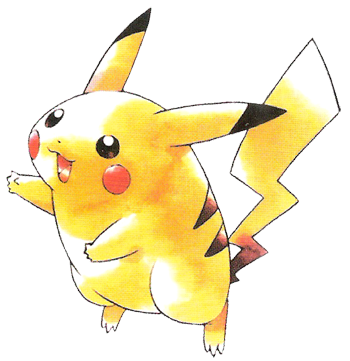

i'm 22 y/o, based in the bay area, ex-software engineer, now building something new.

reach out if you'd like to chat! trying to expand my circle
at 19, i moved from the midwest to the bay to work at roblox as a software engineer.
at 18, i did 2 hackathons at stanford and ucsd, and we won 6 awards. then i dropped out of college after my first semester.
at 17, i did my first internship, and tried building a startup (nonprofit) with my buddies to alleviate senior isolation during the pandemic. our work was featured in some papers (1, 2). i spoke at a conference about it. then we stopped cuz college.
startups — i like projects with an impactful, bold vision, one i could spend all my time thinking about. i naturally prefer to wear multiple hats, building obsessively, etc.
coding and technology — i'm most experienced with frontend technology on web, like react, typescript, webpack, babel, jest, node, that kinda thing. i'm passionate about it, but it's mainly bc i'm passionate about aesthetics. i'm more passionate about low-level programming and systems, like virtual machines, emulators, compilers, language interpreters, operating systems, reverse engineering, but sadly i haven't touched any of it in years.
music — i really enjoy listening to, or learning about, music that challenges my understanding of it. in 2024, i mainly listened to electronic music, primarily idm, ambient, and breakcore, with lots of experimental, noise, industrial sprinkled in. top artists: Boards of Canada, Aphex Twin, Alberich. (more details on my last.fm)
puzzles and math — loooove math, in high school i took multivariable calc and diff eq, it was really fun. but since then i haven't needed to use anything close to that level of math. i see math as a form of puzzle which is where the passion comes from i think. other puzzles include rubik's cubes (i still have all 20+ from my childhood) and nyt puzzles (strands!!, connections, wordle)
aesthetics and design — interior design, ui/ux/interface design, consumer aesthetics, fashion, photography, too much to unpack here. i love learning about aesthetic history and evolution. i pay close attention to aesthetics generally but especially when building.
retro tech — CRT TVs/monitors (the old box shaped ones). last year i had 4, including an iMac G3 and a high-end consumer Sony TV from the 80s. sadly i got rid of them, but i'm starting a new collection this year.
retro gaming — grew up on nintendo games (favs: paper mario on n64, luigi's mansion on gc, tetris on nes), roblox, minecraft, valve games (favs: portal, half life).
languages — used to spend hours learning languages as a kid. also made several of my own (constructed languages, or "conlangs"). the only thing i've retained since then is being able to write in various writing systems (cyrillic, arabic, hangul, greek).
linguistics, psychology, neuroscience, cognitive science, philosophy — i was more deeply interested in these subjects at various points in my life, but haven't retained almost anything i once knew about them. i'd still love to have a discussion focused on them, but i wouldn't be able to contribute much besides extreme curiosity lol